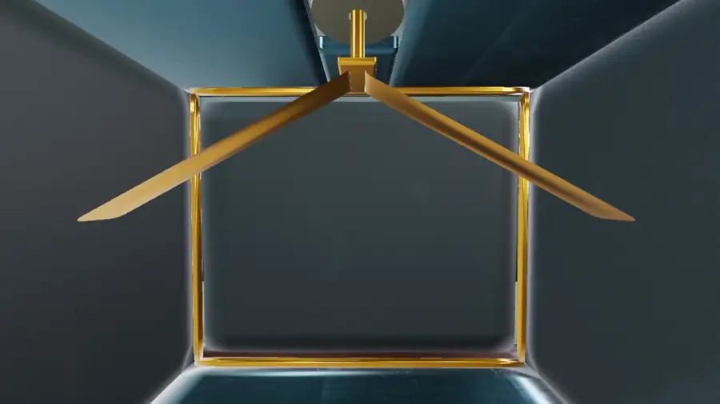
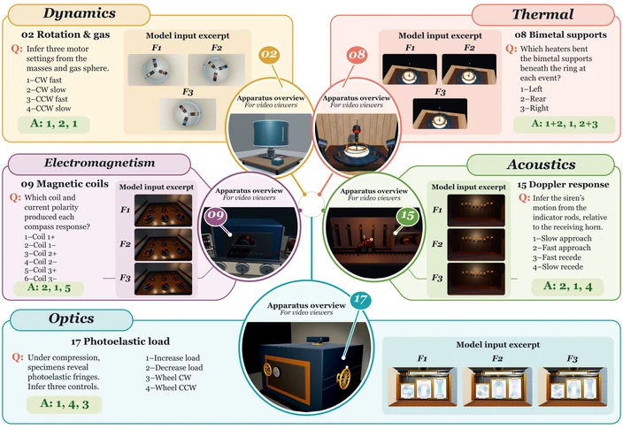
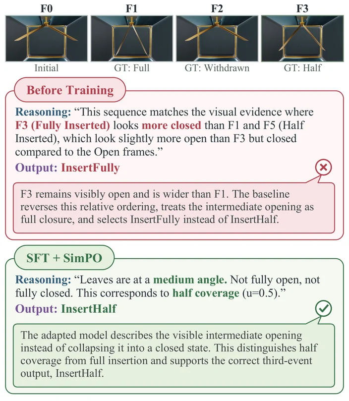
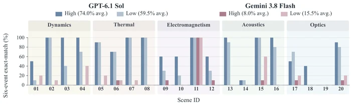

CaveBench: Benchmarking Abductive Physical Reasoning from Internal Observations

What moved the gold leaves?
Playback unavailable. Open the MP4
Tsinghua University * Equal contribution · † Corresponding author
Explore the dataset
A camera records the experiment from inside the apparatus. Given an apparatus description and a list of external controls, the model identifies which controls were applied between consecutive frames.
- Apparatuses
- 20
- Physical domains
- 5
- Test questions
- 1,180
The dataset contains 9,000 training episodes, 1,000 validation episodes and 200 test episodes. Each test question covers one to six events, with an initial image and one image after each event.
Test set composition by domain
| Domain | Apparatuses | Episodes | Questions | Single-label events | Two-label events |
|---|---|---|---|---|---|
| Dynamics | S01–S04 | 40 | 240 | 140 | 100 |
| Thermal physics | S05–S08 | 40 | 240 | 68 | 172 |
| Electromagnetism | S09–S12 | 40 | 220 | 203 | 37 |
| Acoustics | S13–S16 | 40 | 240 | 108 | 132 |
| Optics | S17–S20 | 40 | 240 | 179 | 61 |
In S11, the first three events show full insertion, half insertion and withdrawal in varying order. The three leaf positions provide visual references for distinguishing the settings. All ten S11 episodes contribute questions of lengths three through six. Across apparatuses, there are 190 questions at each of the first two lengths and 200 at each remaining length.
Case studies
Download editable slidesBrowse all 20 apparatuses
Benchmark overview

Construction and evaluation

Physical design and example questions


Leaderboard
Exact match requires the complete set of controls at each event, in chronological order. Simultaneous controls can appear in either order. On six-event questions, GPT-6.1 Sol identified all controls at 1,035 of 1,200 events (86.25%) and recovered 136 of 200 complete sequences (68.0%).
Detailed tables
Analysis
From one event to six
All 27 model configurations score lower on six-event questions than on single-event questions. Gemini 3.8 Flash drops from 60.5% to 21.5%, and MiniMax M3.1 Flash drops from 38.4% to 12.5%.
Electromagnetism is MiniMax M3.1 Flash’s strongest domain on six-event questions (27.5%). It is the lowest-scoring domain for GPT-6.1 Sol (57.5%) and Terra (37.5%). Both reach their highest scores in thermal physics, at 80.0% and 85.0% respectively.
Learning to recover a sequence
Supervised fine-tuning raises Qwen3.5-9B’s six-event accuracy from 0.5% to 20.0%. Across two training seeds, SimPO and KTO achieve similar single-event accuracy (86.8% and 86.3%). At six events, SimPO reaches 31.8% and KTO scores 14.5%.
On the 40 six-event dynamics questions, SFT recovers 10 complete sequences. The two SimPO runs recover 16 and 17. Across all five domains, each run recovers 27 sequences that SFT missed. Of these, 26 are the same questions. Compare the two training seeds.


Reasoning effort
Across the same 200 six-event questions, GPT-6.1 Sol recovers 119 full sequences at low reasoning effort (59.5%) and 148 at high effort (74.0%). Gemini 3.8 Flash drops from 31 complete sequences (15.5%) to 16 (8.0%).


Error analysis
Of 100 incorrect six-event answers, 38 misread a visual cue and 31 failed to connect observations across time. In 24, the model misapplied a physical principle. In the remaining seven, it selected the wrong combination of controls.